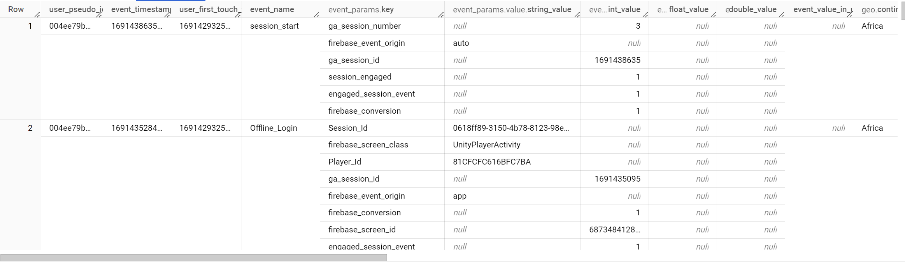

setwd(here::here()) Archery Game Data Preparation
Disclaimer
This notebook is the first example of a Firebase Analytics data being flattened in R Programming Language, and solutions might not be the most optimal ones.
Preparing JSONL(L stands for new line delimited) data to be in tabular, can sometimes be a journey,
Especially when you are dealing with Firebase Analytics Data,
What is Firebase ? It’s the most widely used data tracking software used for mobile applications. Below is how Firebase analytics data look like when it’s partially cleaned:

Each row is an event, all events have a time stamp, all events have some other extra information like country , version etc, but more importantly there is a key, and values, where values can be int, float, or string. But not two different at the same time for a given single key.
The above is a summary of a generic, mostly clean Firebase analytics data, the picture is from Google Cloud Bigquery
Trick 1
You can use the “here” function from , guess the name “here” package in R to set working directory to your script’s location, so people who use your code don’t have to change any lines to test it out
You can now check if the here::here() have worked
getwd()[1] "C:/Users/Alta/OneDrive/Desktop/archery_game/archery_game"As we previously have shown you, our data is in json format, lets load it and check the head of the data to see how it looks
library(jsonlite) ## no error messages here thanks to the #| warning: false option!
library(tidyverse)
jsonl_data <- stream_in(file("data.json"),verbose = FALSE)
head(jsonl_data,2) event_date event_timestamp event_name
1 20231221 1703146325195000 app_remove
2 20231221 1703134161235001 screen_view
event_params
1 ga_session_id, ga_session_number, firebase_event_origin, 1702888810, 10, NA, NA, NA, auto
2 entrances, ga_session_number, ga_session_id, firebase_screen_id, firebase_event_origin, engaged_session_event, firebase_screen_class, 1, 52, 1703134160, -8779596609919170096, NA, 1, NA, NA, NA, NA, NA, auto, NA, UnityPlayerActivity
event_bundle_sequence_id event_server_timestamp_offset
1 15 1383899326014
2 100 494
user_pseudo_id privacy_info.analytics_storage
1 eae0e04fa3fa69ef646baaeaa716ea6b Yes
2 74b842a52de12e4cf74034f998ee98cf Yes
privacy_info.ads_storage privacy_info.uses_transient_token
1 Yes No
2 Yes No
user_properties
1 ga_session_id, ga_session_number, first_open_time, 1702888810, 10, 1701284400000, 1702888810463000, 1702888810463000, 1701284050034000
2 ga_session_number, ga_session_id, first_open_time, 52, 1703134160, 1698397200000, 1703134160741000, 1703134160741000, 1698396193166000
user_first_touch_timestamp device.category device.mobile_brand_name
1 1701284050034000 mobile Samsung
2 1698396193166000 mobile Samsung
device.mobile_model_name device.mobile_marketing_name
1 SM-G7102 Galaxy Grand 2
2 SM-J110H Galaxy J1
device.mobile_os_hardware_model device.operating_system
1 SM-G7102 Android
2 SM-J110H Android
device.operating_system_version device.advertising_id
1 Android 4.4.2 f28a3de1-340f-4d84-a491-ae5bc5c66a8a
2 Android 4.4.4 6d58a8cf-8508-45cb-9f0a-41fbbc14d0c7
device.language device.is_limited_ad_tracking device.time_zone_offset_seconds
1 ar-ae Yes 7200
2 ar-ae Yes 7200
geo.city geo.country geo.continent geo.region
1 Kafr el-Sheikh Egypt Africa Kafr El-Sheikh Governorate
2 Jordan Asia Amman Governorate
geo.sub_continent geo.metro app_info.id app_info.version
1 Northern Africa (not set) com.elakerem.focus 2.0.22
2 Western Asia (not set) com.elakerem.focus 2.0.22
app_info.firebase_app_id app_info.install_source
1 1:2474473662:android:5047021a790dce42eb06ef com.android.vending
2 1:2474473662:android:5047021a790dce42eb06ef com.android.vending
traffic_source.name traffic_source.medium traffic_source.source stream_id
1 (direct) (none) (direct) 2758285888
2 (direct) (none) (direct) 2758285888
platform items is_active_user event_previous_timestamp
1 ANDROID NULL FALSE <NA>
2 ANDROID NULL TRUE 1703035993871001
collected_traffic_source.manual_source collected_traffic_source.manual_medium
1 <NA> <NA>
2 <NA> <NA>Overall, it is very uninterpretable , because we have key value formats, data frame of data frames, list of data frames, and all sorts of weird things , Let’s also without going into next levels through use of max.level=1 argument check out the data again
str(jsonl_data,max.level = 1)'data.frame': 24762 obs. of 20 variables:
$ event_date : chr "20231221" "20231221" "20231221" "20231221" ...
$ event_timestamp : chr "1703146325195000" "1703134161235001" "1703134235541004" "1703134279049008" ...
$ event_name : chr "app_remove" "screen_view" "level_end" "user_engagement" ...
$ event_params :List of 24762
$ event_bundle_sequence_id : chr "15" "100" "100" "100" ...
$ event_server_timestamp_offset: chr "1383899326014" "494" "494" "494" ...
$ user_pseudo_id : chr "eae0e04fa3fa69ef646baaeaa716ea6b" "74b842a52de12e4cf74034f998ee98cf" "74b842a52de12e4cf74034f998ee98cf" "74b842a52de12e4cf74034f998ee98cf" ...
$ privacy_info :'data.frame': 24762 obs. of 3 variables:
$ user_properties :List of 24762
$ user_first_touch_timestamp : chr "1701284050034000" "1698396193166000" "1698396193166000" "1698396193166000" ...
$ device :'data.frame': 24762 obs. of 11 variables:
$ geo :'data.frame': 24762 obs. of 6 variables:
$ app_info :'data.frame': 24762 obs. of 4 variables:
$ traffic_source :'data.frame': 24762 obs. of 3 variables:
$ stream_id : chr "2758285888" "2758285888" "2758285888" "2758285888" ...
$ platform : chr "ANDROID" "ANDROID" "ANDROID" "ANDROID" ...
$ items :List of 24762
$ is_active_user : logi FALSE TRUE TRUE TRUE TRUE TRUE ...
$ event_previous_timestamp : chr NA "1703035993871001" "1703134211021004" "1703036243245008" ...
$ collected_traffic_source :'data.frame': 24762 obs. of 2 variables:So we have some Lists, some data frames, some characters, and some logical ones , we got a beautiful soup ,
recall, the event_params column from the example picture

event_params has key and value nestings, and value has string, float , int double value nestings, and these are all in different formats, lets take a look at event_params with str function
str(jsonl_data$event_params,list.len=3)List of 24762
$ :'data.frame': 3 obs. of 2 variables:
..$ key : chr [1:3] "ga_session_id" "ga_session_number" "firebase_event_origin"
..$ value:'data.frame': 3 obs. of 2 variables:
.. ..$ int_value : chr [1:3] "1702888810" "10" NA
.. ..$ string_value: chr [1:3] NA NA "auto"
$ :'data.frame': 7 obs. of 2 variables:
..$ key : chr [1:7] "entrances" "ga_session_number" "ga_session_id" "firebase_screen_id" ...
..$ value:'data.frame': 7 obs. of 2 variables:
.. ..$ int_value : chr [1:7] "1" "52" "1703134160" "-8779596609919170096" ...
.. ..$ string_value: chr [1:7] NA NA NA NA ...
$ :'data.frame': 9 obs. of 2 variables:
..$ key : chr [1:9] "ga_session_number" "level" "firebase_screen_id" "firebase_event_origin" ...
..$ value:'data.frame': 9 obs. of 2 variables:
.. ..$ int_value : chr [1:9] "52" "1" "-8779596609919170096" NA ...
.. ..$ string_value: chr [1:9] NA NA NA "app" ...
[list output truncated]We have a complicated format, here is a demonstration of how to access event_params and its sub parts
class(jsonl_data) ## Whole data class [1] "data.frame"class(jsonl_data$event_params) ## Event params class [1] "list"jsonl_data$event_params[[1]] ## access first row's event_params key value.int_value value.string_value
1 ga_session_id 1702888810 <NA>
2 ga_session_number 10 <NA>
3 firebase_event_origin <NA> autoclass(jsonl_data$event_params[[1]]) ## it's class [1] "data.frame"jsonl_data$event_params[[1]][1] ## how to access event_params$key key
1 ga_session_id
2 ga_session_number
3 firebase_event_originclass(jsonl_data$event_params[[1]][1]) ## it's class[1] "data.frame"jsonl_data$event_params[[1]][2] ## how to access event_params$value value.int_value value.string_value
1 1702888810 <NA>
2 10 <NA>
3 <NA> autoclass(jsonl_data$event_params[[1]][2]) ## it's class[1] "data.frame"We have a data frame jsonl_data, it has a list event_params, list is made of data frames, and in the data frame we have key column ,and a data frame named value, which has two columns, named int_value and string_value.
Here is the issue, our data also has inconsistencies bellow take a look at two different “dataframes” under the event_params
jsonl_data$event_params[[4983]] key string_value
1 previous_os_version 11
2 firebase_event_origin autojsonl_data$event_params[[1]] key value.int_value value.string_value
1 ga_session_id 1702888810 <NA>
2 ga_session_number 10 <NA>
3 firebase_event_origin <NA> autoLets begin cleaning , firstly there were some non data frame, lists objects inside the event_params, we will iterate over the event_params, and convert them.
list_of_dfs=list()
for(i in 1:nrow(jsonl_data)){
temp_df= as.data.frame(jsonl_data$event_params[[i]])
list_of_dfs[[i]] <- temp_df
}
class(list_of_dfs)[1] "list"list_of_dfs[[1]] key value.int_value value.string_value
1 ga_session_id 1702888810 <NA>
2 ga_session_number 10 <NA>
3 firebase_event_origin <NA> autoin the next step re call we had int value, and string value for each key, with one of these two always being null.
Since one of them is always null , we can concoctate them by binding columns , but we got two type of objects inside the event_params( was 3 before the above loop ), the case when there is
event_params with key, and value with value having 2 more sub columns and the case with even_params having no nested value column but instead a “string_value” column
We can iterate over it in a for loop , for these 2 specific cases fix, bind the columns and unnest it out of the value and have a single value column, and when there is only key with string_value, we can just rename the column
For fun we will use try catch because why not learn it while working in R ,Example usage of try catch
Try
To Do Something
Except ## D0f fail
Do something else instead
for (i in seq_along(list_of_dfs)) {
#print(i)
tryCatch({
if ("value" %in% names(list_of_dfs[[i]])) {
if (is.list(list_of_dfs[[i]]$value)) {
list_of_dfs[[i]]$value <- ifelse(
!is.na(list_of_dfs[[i]]$value$int_value),
as.character(list_of_dfs[[i]]$value$int_value),
as.character(list_of_dfs[[i]]$value$string_value)
)
list_of_dfs[[i]]$value <- as.character(list_of_dfs[[i]]$value)
list_of_dfs[[i]] <- list_of_dfs[[i]][, !(names(list_of_dfs[[i]]) %in% c("int_value", "string_value"))]
}
}
}, error = function(e) {
# If an error occurs, rename the second column to "value"
if (length(names(list_of_dfs[[i]])) >= 2) {
#list_of_dfs[[4983]]="cancer"
#print(i)
#print(list_of_dfs[[i]])
#print(i)
new_temp_df= cbind.data.frame(list_of_dfs[[i]][[1]],c(list_of_dfs[[i]][[2]]))
names(new_temp_df) <- c("key","value")
list_of_dfs[[i]]<<- new_temp_df
#print(list_of_dfs[[i]])
}
})
}
list_of_dfs[[1]] key value
1 ga_session_id 1702888810
2 ga_session_number 10
3 firebase_event_origin autoNote that try catch and error handling is usually much slower than using if statements and should primarily be used for cases that can’t be predicted or handled with regular methods. but it can also be faster when used in place of an extremely complex if check.
I the next step we flatten the event_params,
Instead of having key and values, what if every unique key was a data set column , and values were under it, and if in that respective row, there is no element for a specific key we can just keep null, this would make it easier for anyone else working in this data in future.
Luckily, Tidyverse ensures we don’t have to write a complex loop here since we have dealt with the inconsistencies in our data but first lets get these thing out of list of data frames into a single DF, we will use bind_rows function again from tidyverse
combined_df <- bind_rows(list_of_dfs, .id = "df_id")
head(combined_df) df_id key value
1 1 ga_session_id 1702888810
2 1 ga_session_number 10
3 1 firebase_event_origin auto
4 2 entrances 1
5 2 ga_session_number 52
6 2 ga_session_id 1703134160Now all we got to do is change the binded element from long to wide format for each ID, pivot_wider will automatically fill it with nulls for cases when in that row a specific key is not used.
flattened_df <- combined_df %>%
pivot_wider(names_from = key, values_from = value)
flattened_df <- flattened_df[, -1]
head(flattened_df )# A tibble: 6 × 24
ga_session_id ga_session_number firebase_event_origin entrances
<chr> <chr> <chr> <chr>
1 1702888810 10 auto <NA>
2 1703134160 52 auto 1
3 1703134160 52 app <NA>
4 1703134160 52 auto <NA>
5 1703190214 53 auto 1
6 1703190214 53 app <NA>
# ℹ 20 more variables: firebase_screen_id <chr>, engaged_session_event <chr>,
# firebase_screen_class <chr>, level <chr>, success <chr>, value <chr>,
# engagement_time_msec <chr>, session_engaged <chr>,
# firebase_previous_class <chr>, firebase_previous_id <chr>,
# update_with_analytics <chr>, system_app <chr>,
# previous_first_open_count <chr>, system_app_update <chr>,
# firebase_conversion <chr>, source <chr>, medium <chr>, …We can now cbind this into our main dataframe, and also drop some other irrelevant columns and the column we have just flattened
final_df= cbind.data.frame(jsonl_data,flattened_df)
final_df2= final_df |> select(-event_params,-user_properties,-items) Let’s take a look at our data again
str(final_df2)'data.frame': 24762 obs. of 41 variables:
$ event_date : chr "20231221" "20231221" "20231221" "20231221" ...
$ event_timestamp : chr "1703146325195000" "1703134161235001" "1703134235541004" "1703134279049008" ...
$ event_name : chr "app_remove" "screen_view" "level_end" "user_engagement" ...
$ event_bundle_sequence_id : chr "15" "100" "100" "100" ...
$ event_server_timestamp_offset: chr "1383899326014" "494" "494" "494" ...
$ user_pseudo_id : chr "eae0e04fa3fa69ef646baaeaa716ea6b" "74b842a52de12e4cf74034f998ee98cf" "74b842a52de12e4cf74034f998ee98cf" "74b842a52de12e4cf74034f998ee98cf" ...
$ privacy_info :'data.frame': 24762 obs. of 3 variables:
..$ analytics_storage : chr "Yes" "Yes" "Yes" "Yes" ...
..$ ads_storage : chr "Yes" "Yes" "Yes" "Yes" ...
..$ uses_transient_token: chr "No" "No" "No" "No" ...
$ user_first_touch_timestamp : chr "1701284050034000" "1698396193166000" "1698396193166000" "1698396193166000" ...
$ device :'data.frame': 24762 obs. of 11 variables:
..$ category : chr "mobile" "mobile" "mobile" "mobile" ...
..$ mobile_brand_name : chr "Samsung" "Samsung" "Samsung" "Samsung" ...
..$ mobile_model_name : chr "SM-G7102" "SM-J110H" "SM-J110H" "SM-J110H" ...
..$ mobile_marketing_name : chr "Galaxy Grand 2" "Galaxy J1" "Galaxy J1" "Galaxy J1" ...
..$ mobile_os_hardware_model: chr "SM-G7102" "SM-J110H" "SM-J110H" "SM-J110H" ...
..$ operating_system : chr "Android" "Android" "Android" "Android" ...
..$ operating_system_version: chr "Android 4.4.2" "Android 4.4.4" "Android 4.4.4" "Android 4.4.4" ...
..$ advertising_id : chr "f28a3de1-340f-4d84-a491-ae5bc5c66a8a" "6d58a8cf-8508-45cb-9f0a-41fbbc14d0c7" "6d58a8cf-8508-45cb-9f0a-41fbbc14d0c7" "6d58a8cf-8508-45cb-9f0a-41fbbc14d0c7" ...
..$ language : chr "ar-ae" "ar-ae" "ar-ae" "ar-ae" ...
..$ is_limited_ad_tracking : chr "Yes" "Yes" "Yes" "Yes" ...
..$ time_zone_offset_seconds: chr "7200" "7200" "7200" "7200" ...
$ geo :'data.frame': 24762 obs. of 6 variables:
..$ city : chr "Kafr el-Sheikh" "" "" "" ...
..$ country : chr "Egypt" "Jordan" "Jordan" "Jordan" ...
..$ continent : chr "Africa" "Asia" "Asia" "Asia" ...
..$ region : chr "Kafr El-Sheikh Governorate" "Amman Governorate" "Amman Governorate" "Amman Governorate" ...
..$ sub_continent: chr "Northern Africa" "Western Asia" "Western Asia" "Western Asia" ...
..$ metro : chr "(not set)" "(not set)" "(not set)" "(not set)" ...
$ app_info :'data.frame': 24762 obs. of 4 variables:
..$ id : chr "com.elakerem.focus" "com.elakerem.focus" "com.elakerem.focus" "com.elakerem.focus" ...
..$ version : chr "2.0.22" "2.0.22" "2.0.22" "2.0.22" ...
..$ firebase_app_id: chr "1:2474473662:android:5047021a790dce42eb06ef" "1:2474473662:android:5047021a790dce42eb06ef" "1:2474473662:android:5047021a790dce42eb06ef" "1:2474473662:android:5047021a790dce42eb06ef" ...
..$ install_source : chr "com.android.vending" "com.android.vending" "com.android.vending" "com.android.vending" ...
$ traffic_source :'data.frame': 24762 obs. of 3 variables:
..$ name : chr "(direct)" "(direct)" "(direct)" "(direct)" ...
..$ medium: chr "(none)" "(none)" "(none)" "(none)" ...
..$ source: chr "(direct)" "(direct)" "(direct)" "(direct)" ...
$ stream_id : chr "2758285888" "2758285888" "2758285888" "2758285888" ...
$ platform : chr "ANDROID" "ANDROID" "ANDROID" "ANDROID" ...
$ is_active_user : logi FALSE TRUE TRUE TRUE TRUE TRUE ...
$ event_previous_timestamp : chr NA "1703035993871001" "1703134211021004" "1703036243245008" ...
$ collected_traffic_source :'data.frame': 24762 obs. of 2 variables:
..$ manual_source: chr NA NA NA NA ...
..$ manual_medium: chr NA NA NA NA ...
$ ga_session_id : chr "1702888810" "1703134160" "1703134160" "1703134160" ...
$ ga_session_number : chr "10" "52" "52" "52" ...
$ firebase_event_origin : chr "auto" "auto" "app" "auto" ...
$ entrances : chr NA "1" NA NA ...
$ firebase_screen_id : chr NA "-8779596609919170096" "-8779596609919170096" "-8779596609919170096" ...
$ engaged_session_event : chr NA "1" "1" "1" ...
$ firebase_screen_class : chr NA "UnityPlayerActivity" "UnityPlayerActivity" "UnityPlayerActivity" ...
$ level : chr NA NA "1" NA ...
$ success : chr NA NA "0" NA ...
$ value : chr NA NA "0" NA ...
$ engagement_time_msec : chr NA NA NA "114189" ...
$ session_engaged : chr NA NA NA NA ...
$ firebase_previous_class : chr NA NA NA NA ...
$ firebase_previous_id : chr NA NA NA NA ...
$ update_with_analytics : chr NA NA NA NA ...
$ system_app : chr NA NA NA NA ...
$ previous_first_open_count : chr NA NA NA NA ...
$ system_app_update : chr NA NA NA NA ...
$ firebase_conversion : chr NA NA NA NA ...
$ source : chr NA NA NA NA ...
$ medium : chr NA NA NA NA ...
$ campaign_info_source : chr NA NA NA NA ...
$ previous_os_version : chr NA NA NA NA ...
$ appnava_churn_prob : chr NA NA NA NA ...Our data is now free of the chaos of event_params
We however still have few more things to do as we got some columns nested, example, geo column has other columns under it like geo.country, geo.continent and so on, and this might make future work slower,
str(final_df2$geo)'data.frame': 24762 obs. of 6 variables:
$ city : chr "Kafr el-Sheikh" "" "" "" ...
$ country : chr "Egypt" "Jordan" "Jordan" "Jordan" ...
$ continent : chr "Africa" "Asia" "Asia" "Asia" ...
$ region : chr "Kafr El-Sheikh Governorate" "Amman Governorate" "Amman Governorate" "Amman Governorate" ...
$ sub_continent: chr "Northern Africa" "Western Asia" "Western Asia" "Western Asia" ...
$ metro : chr "(not set)" "(not set)" "(not set)" "(not set)" ...To ensure our data is friendly for anyone, we can write a small function that detect such “dataframes under our dataframe” and unnest them
is_dataframe <- function(column) {
is.data.frame(column)
}
### object to save columns which are dataframes
dataframe_cols <- c()
# Loop through each column in final_df2
for (col in colnames(final_df2)) {
if (is_dataframe(final_df2[[col]])) {
dataframe_cols <- c(dataframe_cols, col)
}
}
## loop through them, take the column under column to outside of it and combined them
combined_nested_dfs=rep(0,nrow(final_df2))
for (element in dataframe_cols){
temp_index=as.character(element)
temp_df= final_df2[[temp_index]]
combined_nested_dfs=cbind.data.frame(combined_nested_dfs,temp_df)
}
final_df2=final_df2 |> select(-dataframe_cols)Warning: Using an external vector in selections was deprecated in tidyselect 1.1.0.
ℹ Please use `all_of()` or `any_of()` instead.
# Was:
data %>% select(dataframe_cols)
# Now:
data %>% select(all_of(dataframe_cols))
See <https://tidyselect.r-lib.org/reference/faq-external-vector.html>.final_df3=cbind.data.frame(final_df2,combined_nested_dfs)
options(scipen=999)
write.csv(final_df3,"plsfkinwork3.csv")We have written lots of code to have an “end scientist” friendly rectangular dataset final look before we end the dataprep
str(final_df3)'data.frame': 24762 obs. of 65 variables:
$ event_date : chr "20231221" "20231221" "20231221" "20231221" ...
$ event_timestamp : chr "1703146325195000" "1703134161235001" "1703134235541004" "1703134279049008" ...
$ event_name : chr "app_remove" "screen_view" "level_end" "user_engagement" ...
$ event_bundle_sequence_id : chr "15" "100" "100" "100" ...
$ event_server_timestamp_offset: chr "1383899326014" "494" "494" "494" ...
$ user_pseudo_id : chr "eae0e04fa3fa69ef646baaeaa716ea6b" "74b842a52de12e4cf74034f998ee98cf" "74b842a52de12e4cf74034f998ee98cf" "74b842a52de12e4cf74034f998ee98cf" ...
$ user_first_touch_timestamp : chr "1701284050034000" "1698396193166000" "1698396193166000" "1698396193166000" ...
$ stream_id : chr "2758285888" "2758285888" "2758285888" "2758285888" ...
$ platform : chr "ANDROID" "ANDROID" "ANDROID" "ANDROID" ...
$ is_active_user : logi FALSE TRUE TRUE TRUE TRUE TRUE ...
$ event_previous_timestamp : chr NA "1703035993871001" "1703134211021004" "1703036243245008" ...
$ ga_session_id : chr "1702888810" "1703134160" "1703134160" "1703134160" ...
$ ga_session_number : chr "10" "52" "52" "52" ...
$ firebase_event_origin : chr "auto" "auto" "app" "auto" ...
$ entrances : chr NA "1" NA NA ...
$ firebase_screen_id : chr NA "-8779596609919170096" "-8779596609919170096" "-8779596609919170096" ...
$ engaged_session_event : chr NA "1" "1" "1" ...
$ firebase_screen_class : chr NA "UnityPlayerActivity" "UnityPlayerActivity" "UnityPlayerActivity" ...
$ level : chr NA NA "1" NA ...
$ success : chr NA NA "0" NA ...
$ value : chr NA NA "0" NA ...
$ engagement_time_msec : chr NA NA NA "114189" ...
$ session_engaged : chr NA NA NA NA ...
$ firebase_previous_class : chr NA NA NA NA ...
$ firebase_previous_id : chr NA NA NA NA ...
$ update_with_analytics : chr NA NA NA NA ...
$ system_app : chr NA NA NA NA ...
$ previous_first_open_count : chr NA NA NA NA ...
$ system_app_update : chr NA NA NA NA ...
$ firebase_conversion : chr NA NA NA NA ...
$ source : chr NA NA NA NA ...
$ medium : chr NA NA NA NA ...
$ campaign_info_source : chr NA NA NA NA ...
$ previous_os_version : chr NA NA NA NA ...
$ appnava_churn_prob : chr NA NA NA NA ...
$ combined_nested_dfs : num 0 0 0 0 0 0 0 0 0 0 ...
$ analytics_storage : chr "Yes" "Yes" "Yes" "Yes" ...
$ ads_storage : chr "Yes" "Yes" "Yes" "Yes" ...
$ uses_transient_token : chr "No" "No" "No" "No" ...
$ category : chr "mobile" "mobile" "mobile" "mobile" ...
$ mobile_brand_name : chr "Samsung" "Samsung" "Samsung" "Samsung" ...
$ mobile_model_name : chr "SM-G7102" "SM-J110H" "SM-J110H" "SM-J110H" ...
$ mobile_marketing_name : chr "Galaxy Grand 2" "Galaxy J1" "Galaxy J1" "Galaxy J1" ...
$ mobile_os_hardware_model : chr "SM-G7102" "SM-J110H" "SM-J110H" "SM-J110H" ...
$ operating_system : chr "Android" "Android" "Android" "Android" ...
$ operating_system_version : chr "Android 4.4.2" "Android 4.4.4" "Android 4.4.4" "Android 4.4.4" ...
$ advertising_id : chr "f28a3de1-340f-4d84-a491-ae5bc5c66a8a" "6d58a8cf-8508-45cb-9f0a-41fbbc14d0c7" "6d58a8cf-8508-45cb-9f0a-41fbbc14d0c7" "6d58a8cf-8508-45cb-9f0a-41fbbc14d0c7" ...
$ language : chr "ar-ae" "ar-ae" "ar-ae" "ar-ae" ...
$ is_limited_ad_tracking : chr "Yes" "Yes" "Yes" "Yes" ...
$ time_zone_offset_seconds : chr "7200" "7200" "7200" "7200" ...
$ city : chr "Kafr el-Sheikh" "" "" "" ...
$ country : chr "Egypt" "Jordan" "Jordan" "Jordan" ...
$ continent : chr "Africa" "Asia" "Asia" "Asia" ...
$ region : chr "Kafr El-Sheikh Governorate" "Amman Governorate" "Amman Governorate" "Amman Governorate" ...
$ sub_continent : chr "Northern Africa" "Western Asia" "Western Asia" "Western Asia" ...
$ metro : chr "(not set)" "(not set)" "(not set)" "(not set)" ...
$ id : chr "com.elakerem.focus" "com.elakerem.focus" "com.elakerem.focus" "com.elakerem.focus" ...
$ version : chr "2.0.22" "2.0.22" "2.0.22" "2.0.22" ...
$ firebase_app_id : chr "1:2474473662:android:5047021a790dce42eb06ef" "1:2474473662:android:5047021a790dce42eb06ef" "1:2474473662:android:5047021a790dce42eb06ef" "1:2474473662:android:5047021a790dce42eb06ef" ...
$ install_source : chr "com.android.vending" "com.android.vending" "com.android.vending" "com.android.vending" ...
$ name : chr "(direct)" "(direct)" "(direct)" "(direct)" ...
$ medium : chr "(none)" "(none)" "(none)" "(none)" ...
$ source : chr "(direct)" "(direct)" "(direct)" "(direct)" ...
$ manual_source : chr NA NA NA NA ...
$ manual_medium : chr NA NA NA NA ...Lets save the results before we begin our data analysis.
write.csv(final_df3,"plsfkinwork3.csv")